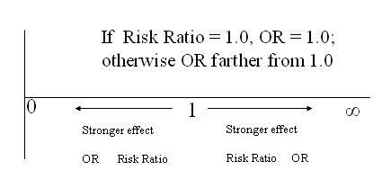
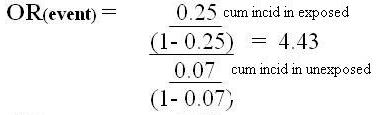
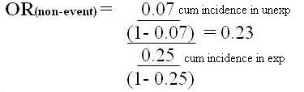
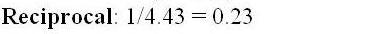

Odds Ratio versus Risk Ratio
Lead Author(s): Jeff Martin, MD
Comparing OR and Risk Ratio - OR Farther from 1
The schematic below illustrates the point that, unless both the risk ratio and the odds ratio are 1.0 (no difference),
- The odds ratio is always farther from 1.0 than the risk ratio
- Larger if the risk ratio is greater than 1.0 and smaller if the risk ratio is less than 1.0.

Comparing OR and Risk Ratio - Disease Incidence- Rare
OR approximates Risk Ratio only if disease incidence is low
- in both the exposed and the unexposed group
If risk of disease is high in either or both exposed and unexposed,
It is important to understand this feature of the odds ratio because you will see it referred to as an approximation of the risk ratio.
- It is no less valid as a mathematical expression than the risk ratio, but its less intuitive nature leads many investigators to prefer to talk about the risk ratio, a more intuitive concept.
- This results in measures which are in fact odds ratios being presented in some papers as risk ratios or relative risks.
- In many instances this is not appropriate even as an approximation because the incidence is not low in both the exposed and unexposed group and the OR and the risk ratio are quite different.
Comparing OR and Risk Ratio - Disease Incidence - High
If Risk Ratio is Greater than 1
- If Risk Ratio greater than 1, then OR farther from 1 than Risk Ratio:
For example,
- RR = 0.4 / 0.2 = 2
- OR = (0.4/0.6) /(0.2/0.8) = 0.67/0.25 = 2.7
When the ratio of two probabilities, a risk ratio, is greater than 1.0, the OR will be larger than the RR.
The OR is dividing each probability by a quantity forced to be less 1.0 (unless probability equals 1.0), so each probability increases and the ratio between them also increases.
Example of High Risk of Disease
If risk of disease is high in either or both exposed and unexposed,
Example of high risk of disease:
- Risk in exposed is 0.6
- Risk in unexposed is 0.1
Risk Ratio = 0.6/0.1 = 6.0
Odds Ratio = 0.6/0.4 / 0.1/0.9 = 13.5
Comparing OR and Risk Ratio - Disease Incidence - Same
The only exception occurs when the risk ratio is exactly 1.0. In that case the OR will also be 1.0.
- This can easily be seen by modifying the example above to RR = 0.4 / 0.4 = 1.0.
- The OR would then be 0.4/0.6 / 0.4/0.6 = 1.0.
Comparing OR and Risk Ratio - Disease Incidence - Low
If Risk Ratio is Less than 1
- If Risk Ratio less than 1, then OR farther from 1 than Risk Ratio:
For example,
- RR = 0.2 / 0.3 = 0.67
- OR = (0.2/0.8) / (0.3/0.7) = 0.25 / 0.43 = 0.58
Since the OR is dividing each probability by a quantity forced to be less 1.0 unless probability = 1.0,
- each probability increases and the ratio between them also increases,
- which in this case moves the value farther away from 1.0.
Values for both risk ratios and odds ratios less than 1 are bounded by 0.
- In that respect they differ from ratios with values greater than 1, which can be infinitely large.
Example of Low Risk of Disease
Example of myocardial infarction (MI):
- Incidence of MI risk in high blood pressure group is 0.018
- Incidence of MI risk in low blood pressure group is 0.003
Risk Ratio = 0.018/0.003 = 6.0
Odds Ratio = 0.01833/0.00301 = 6.09
In this example the probability of the non-event in the group with the highest incidence (the exposed group) is 0.982 (1 – 0.018).
- The probability of the event in the unexposed is even closer to 1.0: 0.997 (1 – 0.003).
- So dividing the two probabilities by values close to 1.0 is going to have very little effect on their ratio.
- If either probability of the non-event had been far from 1.0, then there would have been a substantial effect on the ratio.
OR Is Symmetrical - Risk Ratio Is Not Symmetrical
Unlike Risk Ratio, OR is symmetrical: OR of event = 1 / OR of non-event
- OR of non-event is 1 over OR of event
- RR of non-event IS NOT 1 over RR of event
Example:
If cumlative incidence in exposed = 0.25
If cumulative incidence in unexposed = 0.07,
then
- RR (event) = 0.25 / 0.07 = 3.6
- RR (non-event) = 0.75 / 0.93 = 0.8
Not reciprocal: 1/3.6 = 0.28 DOES NOT EQUAL 0.8
Example of Symmetry of Odds Ratio


